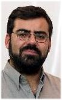
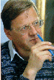
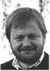

| Home |
| About IR |
| Sponsoring IR |
| Editors |
| Author instructions |
| Copyright |
| Author index |
| Subject index |
| Search |
| Reviews |
| Weblog |
| InformationR.net |
| Register |
Information Research is published by Professor Tom Wilson, who is also Editor-in-Chief: he is assisted by Dr. Terrence A. Brooks, Associate Editor, North America; Dr. Elena Maceviciute, Associate Editor, Eastern and Central Europe and Book Reviews Editor; Nils Pharo, Associate Editor (Layout); Dr. José Vicente Rodríguez, Associate Editor for the Luso-Hispanic countries; Salam Baker Shanawa is Associate Editor, Technology and Dr. Diane Sonnenwald, Associate Editor, "Rest of the World". There is also an international Editorial Board.
| Prof. Tom Wilson |
Prof. José Rodríguez |
Prof. Elena Maceviciute |
| Prof. Diane Sonnenwald |
Dr. Terrence A. Brooks |
Salam Baker Shanawa |
Dr. Nils Pharo | Dr. Susan Williams |
Dr. Terrence A. Brooks is an Associate Professor at the Information School, University of Washington. His current interests are the design and presentation of information on the Web, and the use of Web scripting and programming technologies. Other interests include the effects of orthography in information retrieval and the assessement of relevance. He is the author of The Bibliometrics Toolbox, a set of computer programs that measure the bibliometric aspects of a literature such as Bradford curves, productivity ranks, degree of clustering, and indices of concentration. |
Professor Elena Maceviciute is Professor in the Faculty of Communication, Vilnius University, Lithuania and Senior Lecturer at the Swedish School of Library and Information Studies, Gothenburg University/Boras University College, Sweden. Her research areas include reference work, information and communication needs, international and intercultural communication, and information management. In addition to her academic work, Elena has worked as a consultant to the Lithuanian Ministry of Culture, the Lithuanian National Commission for UNESCO, the Committee of Europe and others. She teaches distance courses in International Communication studies, co-edits the scholarly journal Knygotyra (Book Science), is a member of the editorial of The Serials Librarian (USA), and a member of the Advisory Board for ICIMSS (Torun, Poland). She has published four books and almost sixty articles, and, has produced a number of translations of English language works (e.g., A. Conan-Doyle, The white company; P. Cornwell, The body of evidence; J. Fiske, Introduction to communication studies; and Blackwell's Encyclopedia of political science). | Dr. Nils Pharo Dr. Nils Pharo is an associate professor at the Faculty for Journalism, Library and Information Science at Oslo University College. His main research areas are interactive information retrieval and information behaviour studies. Currently he is engaged in the Initiative for the Evaluation of XML Retrieval - INEX - where he co-chairs the interactive track. |
Professor José Vicente Rodríguez is Professor in the Information and Documentation Department, Faculty of Information Science, University of Murcia, Spain. Graduate in Chemistry, PhD in Computing Science. Guest Professor in the University of La Habana, Cuba. Co-ordinator of the UNITWIN Chair in 'Information Management in Organizations', sponsored by UNESCO. Member of the 50th Committee, Documentation, of AENOR (Spanish Association of Normalization and Certification). Scientific Consultant to several projects of the Regional Government of Murcia. Chief of the Information Technology Research Group of the University of Murcia. His research area, projects and publications, covers information management, information retrieval and evaluation of Web searching. Currently Dean of the Faculty of Information Science. |
Salam Baker Shanawa holds an MSc in Electronic Engineering and for the last ten years has been working as a system developer for various digital library projects in Denmark and Sweden. Since 2001 he has been the main developer of the Electronic Library Information Navigator ELIN at Lund University Libraries and since 2004 in charge of development and responsible for the technical maintenance of the Directory of Open Access Journals project DOAJ |
Professor Diane Sonnenwald is a Professor at the Swedish School of Library and Information Science at Göteborg University and University College of Borås, and an adjunct professor at the University of North Carolina (USA). She conducts research on collaboration, collaboration technology and human information behavior in a variety of contexts. Previously she worked at Bell Labs and Bell Communications Research doing long-range strategic planning for the U.S. public telecommunications infrastructure and telephone industry. She has led various research projects, including the Design and Evaluation of the nanoManipulator Collaboratory Research Project funded by the National Institutes of Health, and the Collaboration Effort at the National Science Foundation Science and Technology Center for Environmentally Responsible Solvents and Processes. She currently leads a project funded by the US National Library of Medicine to investigate the potential of 3D telepresence technology for emergency medical consultation. | Dr Sue Williams is Associate Professor in the Faculty of Economics & Business and the coordinator of the Information Policy & Practice Research Group at The University of Sydney. Her research uses theories of situated action, socio-technical change and policy to make sense of complex, changing business information landscapes. Recent projects have applied this work in both the public and private sectors and include studies of e-government information service provision, public e-procurement, document retention and the design of corporate digital information services. |
Professor Tom Wilson is Professor Emeritus in Information Management at Sheffield where he served as Head of the Department of Information studies from 1982 to 1997. Tom's principal research areas are information seeking behaviour and information management in which he has researched and published extensively. He is currently Visiting Professor at the Högskolan i Borås, Sweden, and Visiting Professor at the Leeds University Business School, where he is working with Dr. David Allen in directing the AIMTech research group in the field of information management, specializing in mobile information systems. One recently completed project has been in the area of mobile data systems in the Police forces of England and Wales. His study on information overload, was supported by the consultancy company, Accenture. He is one of the most cited authors in the field of information behaviour. Information Research is the third journal he has established: it was preceded by the print journals, Social Science Information Studies and the International Journal of Information Management. |
Ronald Rousseau is President of ISSI (International Society of Scientometrics and Informetrics) and Associate Professor at KHBO (an engineering college at Ostend, Belgium) and at K.U.Leuven (Flemish Catholic University of Louvain). His research interests are in citation analysis and informetrics. He is a pioneer in the field of webometrics and co-author, with Leo Egghe, of Introduction to Informetrics, one of the most-cited books in the field. Ronald is very active in collaboration with Chinese colleagues, and as such has obtained an honorary professorship from Henan Normal University. He is, moreover, a guest professor at the National Library of Sciences Chinese Academy of Sciences (Beijing) and at Dalian University of Technology. |
|
José Augusto Chaves Guimarães is Professor in the Departamento de Ciência da Informação of Universidade Estadual Paulista, Marília. He holds degrees in librarianship and law, and communication science and a PhD in information science. He is a former President of the Brazilian Library Education Association, a Member of the Group on Library Education Studies of MERCOSUL and Member of Library Schools Evaluation and Accreditation Comittees in the Mercosul area. He is a Member of the Editorial Boards of information science journals in Brazil and other South American countries and Researcher of the Brazilian Scientific and Technological Research Council (CNPq). He has been involved in scientific activity in a number of countries in North and South America and Europe. His research interests are in indexing, legal information and library education. |
|
Chun Wei Choo is Associate Professor at the Faculty of Information Studies of the University of Toronto where he completed his Ph.D. in 1993. He has a Bachelor's degree in Engineering from the University of Cambridge (UK) and a Master's degree in Information Systems from the London School of Economics. His main research interests are information management, organizational learning, environmental scanning, and the management of information technology. He has completed three books: Information Management for the Intelligent Organization (2nd edition, 1998, Information Today Inc), The Knowing Organization (1998, Oxford University Press), and Managing Information for the Competitive Edge, co-edited with Ethel Auster (Neal-Schuman, 1996). Chun Wei has also authored book chapters and research articles in the leading journals in the field. |
|
Charles Cole is a Research Associate at the School of Information Studies, McGill University. He received his Ph.D. (Information Science) in 1994 from the University of Sheffield, his M.L.I.S. from McGill University in 1989 and his B.A. (History) from McGill University in 1978. He is also a consultant (Colemining Inc.). With Amanda Spink, he has edited two books in information science: New Directions in Human Information Behavior (2006) and New Directions in Cognitive Information Retrieval (2005), both published by Springer. He has published over 40 articles in such journals as the Journal of the American Society for Information Science and Technology, Information Processing & Management and Library Quarterly. He is currently (2009) writing a book on the Neanderthals and information retrieval design. |
|
Ricardo Baeza-Yates received his Ph.D. in Computer Science from the University of Waterloo, Canada, in 1989. In 2003 he was incorporated to the Chilean Academy of Sciences, being the first computer scientist to achieve this position. Currently he is director of Yahoo Research Latino America in Santiago, Chile and Yahoo Research Barcelona. During 2005 he was an ICREA Professor at Universitat Pompeu Fabra in Barcelona. He also was a professor and director of the Center for Web Research, that he founded in 2002, at the CS department of the University of Chile, where he was the chairperson in the period 1993-5 and 2003-4. His research interests include information retrieval, algorithms, and information visualization. He is co-author of the book Modern Information Retrieval (1999), co-author of the Handbook of Algorithms and Data Structures, 2nd ed. (1991) and co-editor of Information Retrieval: Algorithms and Data Structures (1992) His papers appear in journals published by ACM, IEEE or SIAM. |
|
Sirje Virkus is Associate Professor and Head of the Department of Information Studies at Tallinn Pedagogical University. Before moving to the University she worked, until 1985, as a researcher at the Estonian Institute of Scientific and Technological Information and Economic Research, at the Department of Automated Systems for Scientific and Technological Information. She now carries out research into information seeking and use in business and academic environments, and technology for distance education. Her most recent work has been on developing a conceptual model for designing and delivering distance education in library and information science. |
|
Maija-Leena Huotari is Professor and Head of the Department of Information Studies at the University of Oulu, Finland, since 2003, and docent in information and knowledge management since 2001. With BA in economics, and MSc in Information Studies she received her PhD at the University of Sheffield, UK, in 1996. She worked in the Department of Information Studies at the University of Tampere, Finland, from 1997 to 2002 and was Deputy Head of Department, 2000-2002. She has published internationally and in Finland. She was a member of the editorial board of Finnish Information Studies (FIS), 1996-2003 (Chair 1997 and 2000) and Editor-in-Chief of Studies in Information Sciences (SISCI) of Tampere University Press in 2002. She is currently a member of the editorial boards of Information Research and of the Finnish journal Informaatiotutkimus. She was reporteur of the intermediate evaluation of the Multilingual Information Society Programme of the EU in 1998-99, and chair of the Total Quality Evaluation of the Libraries of Helsinki University in 1999-2000. Her research interests focus on information needs, seeking and use, organizational information behaviour, information management, and strategic management of information. |
|
Reijo Savolainen is Professor, Department of Information Studies at the University of Tampere, Finland. Currently, his research areas include information needs, seeking and use, especially the role of electronic networks in information seeking and communication. Reijo is also interested in the social and economic issues of library and information services. He has more than 40 articles in the field of information and library studies. International publications include the conference proceedings Information Seeking in Context (Taylor Graham, 1997), co-edited with Brenda Dervin and Pertti Vakkari. |
Chris Kimble is an associate professor of Management Information Systems at Euromed Marseille, the École de Management, Marseille, France. Before this he lectured on Information Systems and Management at the University of York (UK), Information Technology at the University of Newcastle (UK) and was a researcher with both the Business School and the Computer Science department at the University of Northumbria (UK). His broad research interests are how to best 'manage' the fit between digital technologies and the social world. He is best known for his work on Communities of Practice and Knowledge Management, but he has also published articles on the clickstream analysis of web sites, on-line communities and distributed working. |
|
Crystal Fulton is a College Lecturer at the School of Information and Library Studies (SILS), University College Dublin. She received her PhD and MLIS in Library and Information Science from The University of Western Ontario, Canada. She is the Co-ordinator of SILS’ Information Behaviour Research Group and Director of the Networking for Leisure and wider Life & Information Behaviour Research in Everyday Experience (LIBREE) research initiatives. In addition to studying information behaviour in everyday life settings, including the workplace, she has been invited to share her work at various European Union conferences. Her current research examines the information worlds of individuals and groups engaged in leisure activities and the connections among a chosen hobby, community development, information literacy, and social inclusion. |
|
Shunsaku Tamura is Professor in the School of Library and Information Science at Keio University. He is member of the Board of Trustees of the Japan Society of Library and Information Science and former member of the Board of Trustees of Japan Library Association. He has research interests in information behaviour of ordinary citizen; literacy and reading research; and management and evaluation of information and reference services, especially in public libraries. His publications include Information seeking and information use (2001, editor, text in Japanese) and various articles. He is currently working on a funded research project on the effects of information service to business in public libraries. |
|
|
|
The Netherlands |
|
Rik Maes is Professor in Information and Communication Management at the Faculty of Economics and Econometrics of the University of Amsterdam and Dean of the Executive Master in Information Management program. He holds a Ph.D. in Computer Science from the Catholic University of Leuven (Belgium). He is leader of the PrimaVera research programme. His current research interests are the foundations of Information Management and the strategic impact of IT on society and organizations. He is particularly interested in new, imaginative learning methods and in the increasing impact of the "emotion economy". He is the author of a great number of articles and a well-appreciated speaker. He is member of the editorial board of, among others, the Journal of Strategic Information Systems. He has extensive experience in advising, teaching and coaching top management in the field of information strategy and information management. |
|
Alastair Smith teaches in the School of Information Management at Victoria University of Wellington, New Zealand. Alastair teaches courses in reference work, particularly on-line searching, and Digital Libraries, for the Master of Library and Information Studies programme. Alastair has research interests in the application of computers and networks to information retrieval of document-based information. Particular interests are applications of expert systems and hypertext, especially the use of World Wide Web in Libraries. Currently he is researching Evaluation criteria for Internet Information Resources; Webometrics (the application of bibliometric techniques to the WWW) and Searching Digital Libraries and the WWW. Alastair maintains the WWW Virtual Library section on Evaluation of information sources and South Seas BUBL, an information service for library and information workers in New Zealand, and is list owner of the NZ-Libs and ITSIG email discussion groups. |
|
Dr. Ragnar Audunson is Professor in Library and Information Science at the Faculty of Journalism, Library and Information science at the Oslo College. He is also research coordinator of the Research council of Norway's library research programme. He holds a Ph.d from the University of Oslo, Department of Political Science. His main research interests are within the fields of the social role of libraries, change processes in library organizations, user studies and information behaviour. |
|
Jela Steinerová is associate professor at Department of Library and Information Science, Comenius University Bratislava, Slovakia. She has been teaching subjects of Information Retrieval, Knowledge Organization and Information Analysis since 1992. At present she is head of the research project "Interaction of Man and Information Environment". Her research interests include information seeking behaviour, cognitive and social issues of information process, semiotics and digital libraries, and collaboration of libraries in central Europe. Among her published books are Theory of Information Retrieval, 1996, and Development of Information Products, 1998. She has published more than 70 research papers, chapters in books, and articles, in national and international publications. She is also engaged in several editorial and expert advisory boards, e.g. the international advisory board of ICIMSS in Torun (Poland) and is a member of other professional international associations, e.g. ISKO. She has also worked in the areas of research and methodology of library automation and as a consultant. She has been actively involved in managing conferences, lecturing at international and national conferences (e.g., Tallinn, Cologne, Zurich, Warsaw, Sofia), and at Masaryk University in Brno (Czech Republic). She also participated in several study visits abroad (e.g. Oxford, Florence, Washington, and Brussels). |
|
Dr. Elías Sanz-Casado is Professor and Head of the Department of Library and Information Studies at Carlos III University of Madrid (Spain) where he runs the Information Metrics Studies Laboratory. He has also been Visiting Professor at the University of Puerto Rico. For several years he has been a scientific consultant on research projects for the Spanish Ministry of Science and Technology, and the Regional Government of Madrid. He has research projects with several Latin American countries. His main research area and publications cover bibliometrics and scientometric analysis, user studies and information behaviour. He is Member of the Editorial Boards of several information science journals in Spain and Latin American countries. |
|
|
|
Lars Höglund is Professor in the Institute for Library and Information Science at the University of Gothenburg and, through an agreement between the two institutions, Research Director in the Swedish School of Librarianship and Information Studies at the Högskolan i Borås, where he directs the Doctoral research programme. He was previously a member of the Inforsk research group at the University of Umeå and his research relates to aspects of information behaviour, information management, and change processes in library and information systems. |
|
Victor Kaptelinin is a Professor at the Department of Informatics, Ume&oring; University, Sweden. Before joining the Department Victor held teaching and research positions at the Psychological Institute of Russian Academy of Education, Moscow Lomonosov University, and University of California in San Diego, USA. His main research interests are in interaction design, activity theory, and educational use of information technologies. He is a member of TEAMS, a research group at the Department of Informatics. |
|
Olle Persson is Professor of Library and Information Science and Dean of the Department of Sociology at the University of Umeå, where he has carried out research into the science of science, bibliometrics, national science policies, information use in industry, and research impacts since 1971. He is now responsible for the Master's programme in Library and Information Science. |
|
Ingegerd Rabow is a librarian and returned to Lund to become head of the e-Resources Department at the Lund University Libraries Head Office when it started in May 2001. She has been head of Scientific Communication and Bibliometrics and manager of the nationally funded ScieCom - Swedish Resource Centre for Scientific Communication since 2004. She has worked at the Karolinska Institute Library in Stockholm as project manager of a nationally funded investigation of electronic publishing in the fields of medicine and nursing, and has many years of experience as an information specialist in these subjects at the universities of Umeå and Lund. She has published various bibliometric studies and papers on scholarly publishing models. |
|
United Kingdom |
|
David Allen is Senior Lecturer in Information Management in the Business School of Leeds University. His research deals with information systems and their implications for work and organisation, particularly at the strategic level. He also has an interest in the current discourse about the socio-philosophical foundations of information systems and information management. David manages the AIMTech Research Group in the business school, which carries out research and consultancy work on the development and implementation of mobile information systems in the emergency services—police, fire services and ambulance services and in the public sector generally. David holds an MSc in Information Systems from Stirling University and a PhD in Information Management from Sheffield University |
|
Peter Brophy is Professor of Information Management and Director of the Centre for Research in Library and Information Management (CERLIM) at Manchester Metropolitan University. He has research interests in quality management and performance evaluation of library and information systems; electronic libraries and networked information systems; lifelong learning; social impacts of the information society including issues of exclusion; access to information for blind and partially-sighted people; information policy. CERLIM was established while Peter was University Librarian at the University of Central Lancashire, and has undertaken a number of European Union R&D projects in collaboration with international partners, as well as projects supported by the Library and Information Council. |
|
Elizabeth Davenport leads the Social Informatics Group at Napier University. Elizabeth holds degrees in Greek and English Literature from Edinburgh University (1969; 1973), and an M Sc and Ph D in Information Science from Strathclyde University (1986; 1993). She is currently a co-investigator for Net-Quality, a DGXXIII project on intranets in the tourism sector. She is a member of the UK Arts and Humanities Research Board, a Fellow and past Vice-president of the Institute for Information Scientists in the UK, and is a Fellow of the Centre for Social Informatics and a Visiting Scholar in Indiana University. Her current areas of research are classification in the workplace, digital genres, networked learning for SMEs, inter-organizational systems, social intelligence, information economics, and ethnographic methods in the workplace. |
|
Dr. Mark Hepworth lectures in the Department of Information Science at Loughborough University in the UK in Information Retrieval and the Development of User-Oriented Information Services. A first degree in Social Anthropology and African History sparked Mark's people-centred approach to understanding communities and information behaviour. These skills were channelled, at Sheffield University, into an interest in how people learn and interact with information. This led to work for the first European full text online database company Datasolve Ltd. and later R&D for the Financial Times' electronic information services. He then took a Senior Lectureship in Information Studies in Singapore. After six years he returned to the UK to join the Department of Information Science at Loughborough. During the last five years he has led funded research projects concerning the information needs of informal carers, hospital social workers and people with multiple sclerosis (MS). These projects have led to widespread publication. His research interests include user studies, information behaviour, personalisation, inclusive design and information literacy plus information management and knowledge support in developing countries. |
|
Charles Oppenheim is Professor of Information Science at Loughborough University. Previously, he held a variety of posts in academia and the electronic publishing industry, working for International Thomson, Pergamon and Reuters at various times. He has carried out research on legal issues in information work (especially copyright, data protection and liability for information provision) since the mid 1970s. He also carries out research in measuring the value and impact of information, citation studies, bibliometrics, national and company information policy, the electronic information and publishing industries, ethical issues, patents information, and issues to do with the digital library and the Internet. |
|
United States of America |
|
Nicholas Belkin is Professor and Head of the Department of Library and Information Science at Rutgers University's School of Communication, Information and Library Studies. Nick's research interests include human interaction with information, human-computer interaction in information systems and interactive information retrieval, and he has published extensively in these areas. He obtained his MLS at the University of Washington, Seattle, where he had completed his undergraduate work in Russian language and literature, and his PhD in Information Studies at the University of London. Before moving to Rutgers in 1985 he worked at City University, London for ten years. He has contributed and served as conference Chair in numerous national and international conferences. He receive the ACM Recognition of Service Award in 1989, 1992 and 1997 and the SCILS SCILS Excellence in Research Award, 2001. |
|
Christine L. Borgman Christine L. Borgman is Professor and Presidential Chair in Information Studies at UCLA. She is the author of more than 180 publications in the fields of information studies, computer science, and communication. Both of her sole-authored monographs, Scholarship in the Digital Age: Information, Infrastructure, and the Internet (MIT Press, 2007) and From Gutenberg to the Global Information Infrastructure: Access to Information in a Networked World (MIT Press, 2000), have won the Best Information Science book of the year award from the American Society for Information Science and Technology. She is a lead investigator for the Center for Embedded Networked Systems (CENS), a National Science Foundation Science and Technology Center, where she conducts data practices research. She chaired the Task Force on Cyberlearning for the NSF, whose report, Fostering Learning in the Networked World, was released in July, 2008. Prof. Borgman is a fellow of the American Association for the Advancement of Science and a member of the US National Academies’ Board on Research Data and Information |
|
Blaise Cronin is Dean and Rudy Professor of Information Science at Indiana University Bloomington. Concurrently, he is a Visiting Professor at Napier University's School of Computing and Manchester Metropolitan University's Department of Information and Communication. From 1985-1991 he was Professor of Information Science at the University of Strathcylde. Cronin is Editor of the Annual Review of Information Science and Technology. His major research areas include citation analysis, scientometrics, and scholarly communication. He holds an MA from Trinity College Dublin, a PhD and DSSc from the Queen's University of Belfast, and a DLitt (Hon) from Queen Margaret University College, Edinburgh. |
Jim Jansen is an Assistant Professor at the College of Information Sciences and Technology at The Pennsylvania State University. His research encompasses a broad multi-disciplinary agenda that seeks to identify and influence societal patterns of information dissemination and usage by helping people locate relevant information. Specific areas of focus include Web searching, general systems theory and information system design. Dr. Jansen has approximately 100 publications in the area of information technology and systems. He has received several awards and honours, including an ACM Research Award and six application development awards, along with other writing, publishing, research, and leadership honours. |
|
Dr. Wallace Koehler is Associate Professor and Director of the Master of Library and Information Science Program at Valdosta State University in Georgia, USA. His LIS MS is from the University of Tennessee and his PhD (political science) is from Cornell University. His research interests include web studies, bibliometrics, and information ethics and he has managed to publish a little in each. He has recently published a co-authored textbook entitled Fundamentals of Information Studies: Understanding Information and Its Environment (Neal-Schuman, 2003). |
|
|
|
Dr. Bonnie Nardi is a Professor in the Department of Informatics in the Donald Bren School of Information and Computer Sciences at the University of California, Irvine. Her areas of research are activity theory, interaction design, computer-mediated communication and society and technology. She is especially interested in expressive uses of the Internet, including blogging, instant messaging, and gaming. She is the author, with Victor Kaptelinin, of Acting with technology: activity theory and interaction design. (MIT Press, 2006). |
|
|


This page is maintained by Professor Tom Wilson. t.d.wilson@sheffield.ac.uk Last up-date: 7th July, 2006.